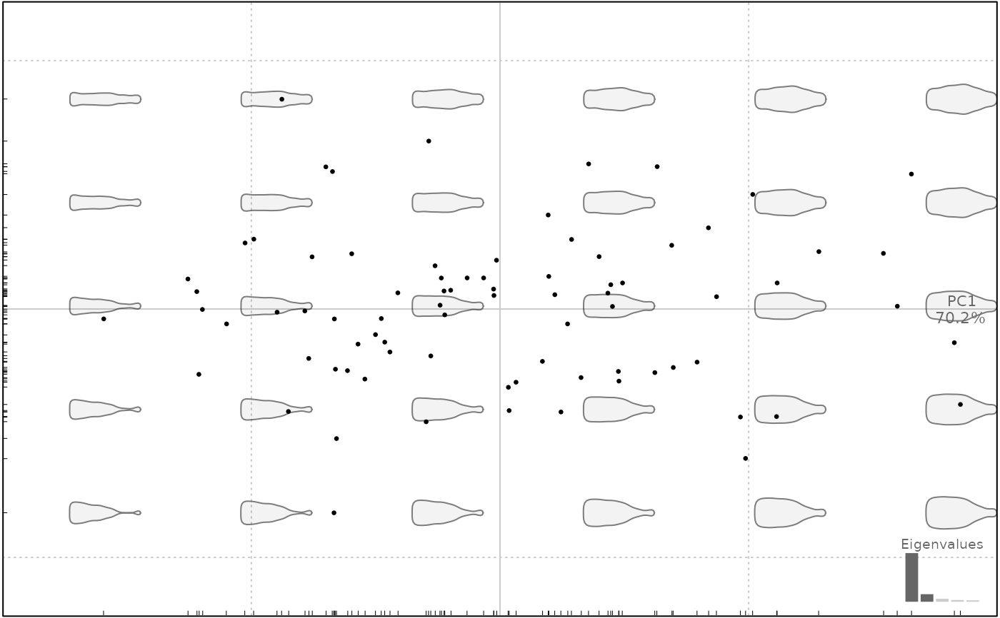

This methods applies column-wise on the coe of any
Coe object but relies on a function that can be used on any matrix. It
simply uses rnorm with the mean and sd calculated for every column (or row).
For a Coe object, on every colum, randomly generates coefficients values
centered on the mean of the column, and with a sd equals to it standard deviates
multiplied by rate.
Usage
breed(x, ...)
# Default S3 method
breed(x, fac, margin = 2, size, rate = 1, ...)
# S3 method for class 'Coe'
breed(x, fac, size, rate = 1, ...)Arguments
- x
the object to permute
- ...
useless here
- fac
a column, a formula or a column id from
$fac- margin
numeric whether 1 or 2 (rows or columns)
- size
numeric the required size for the final object, same size by default
- rate
numeric the number of sd for rnorm, 1 by default.
See also
Other farming:
perm()
Examples
m <- matrix(1:12, nrow=3)
breed(m, margin=2, size=4)
#> [,1] [,2] [,3] [,4]
#> [1,] 1.992539 6.046191 7.530582 13.546154
#> [2,] 1.597120 5.401255 6.157338 9.918069
#> [3,] 2.719108 6.356390 7.720259 9.575402
#> [4,] 1.819941 5.019227 6.469230 11.421643
breed(m, margin=1, size=10)
#> [,1] [,2] [,3]
#> [1,] 8.5262256 4.5583418 10.891540
#> [2,] 2.0164537 7.1949581 8.098329
#> [3,] 3.5485229 6.7330221 14.796293
#> [4,] 4.5729087 6.9630327 4.428239
#> [5,] 10.0236443 6.4076248 10.444698
#> [6,] 2.4088223 3.8264419 11.588238
#> [7,] 10.1900249 4.1974514 3.204119
#> [8,] 0.7693206 -2.5597512 4.571857
#> [9,] 5.4867502 -0.4487622 7.174188
#> [10,] 8.3203774 6.0219317 3.514952
bot.f <- efourier(bot, 12)
#> 'norm=TRUE' is used and this may be troublesome. See ?efourier #Details
bot.m <- breed(bot.f, size=80)
bot.m %>% PCA %>% plot
#> will be deprecated soon, see ?plot_PCA

# breed fac wise
# bot.f %>% breed(~type, size=50) %>% PCA %>% plot(~type)